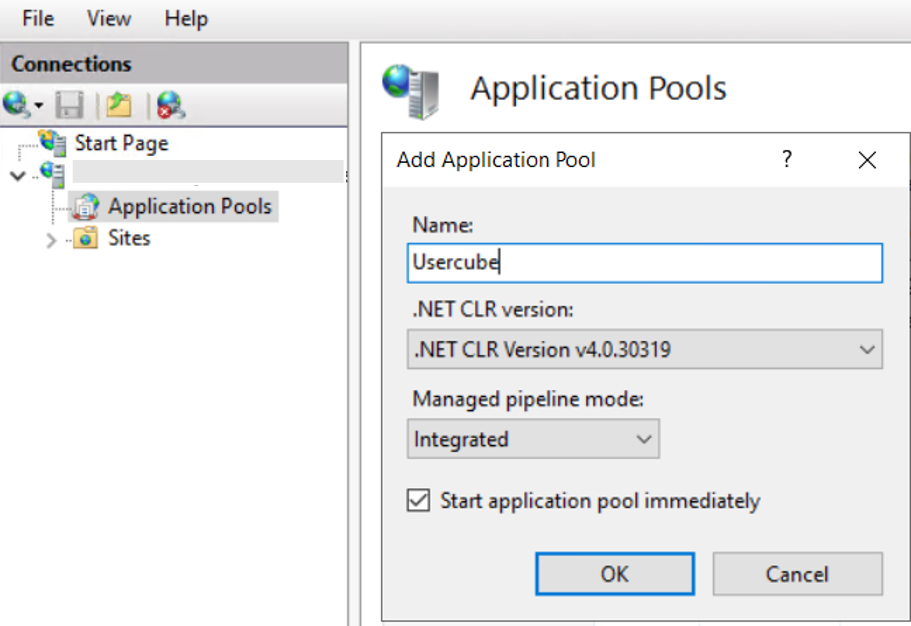
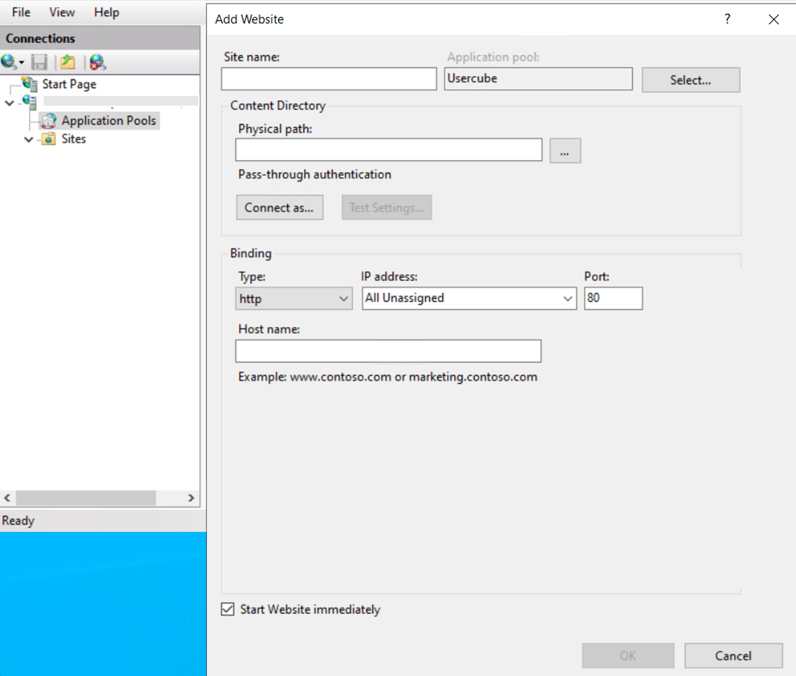
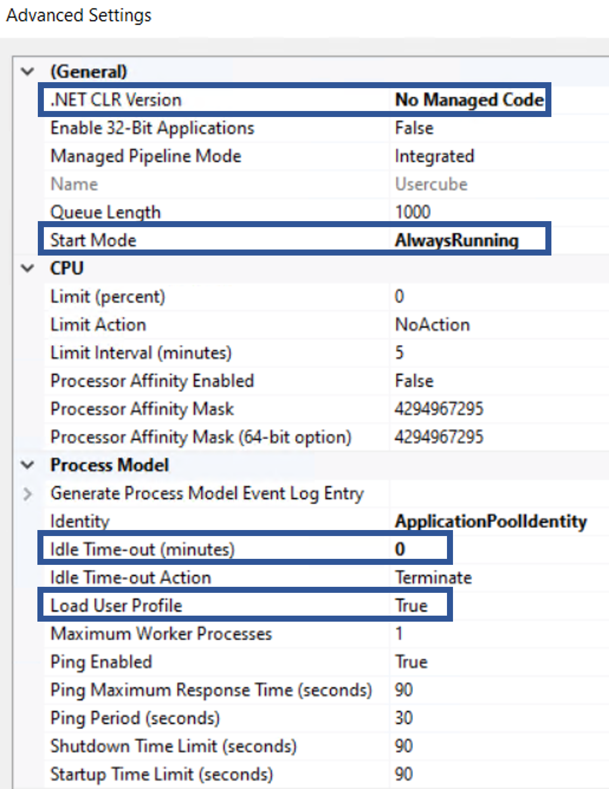
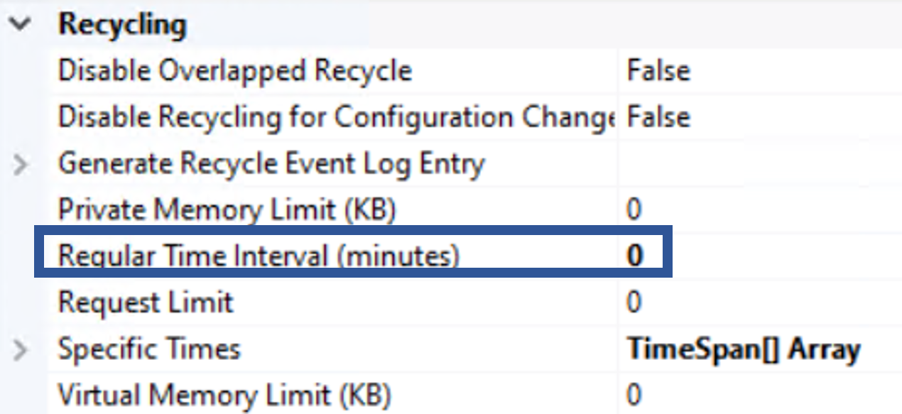
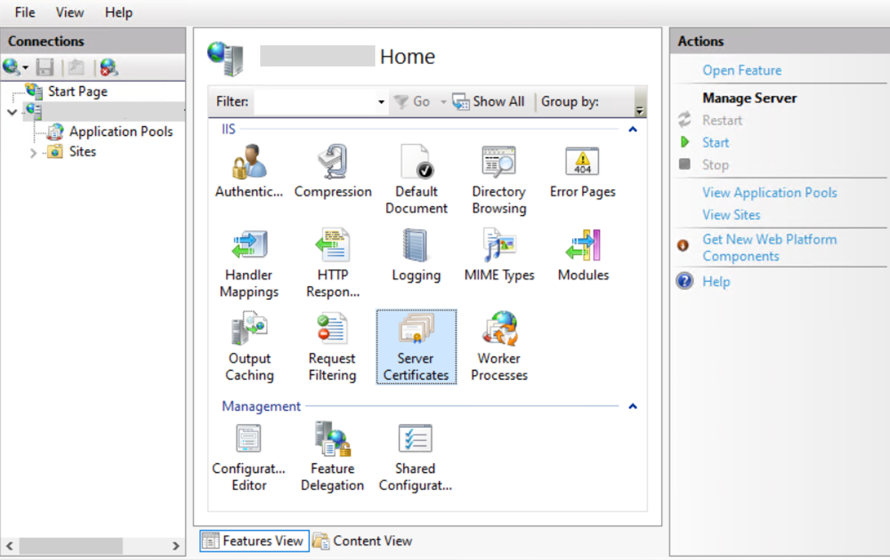
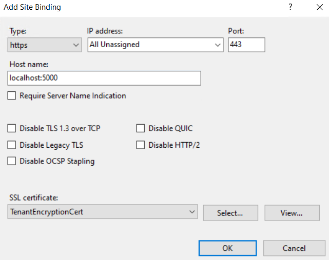

Configure the Pool and Site
This guide shows how to configure the application pool and website via IIS.
Overview
IIS provides a platform for hosting and managing websites. See more details.
To install the production agent, a website must be created and configured correctly, as part of an application pool.
This page describes the optimal configuration in IIS to prepare the production agent's installation.
Configure the Application Pool and Site
Configure the application pool and site by proceeding as follows:
-
Open IIS and remove the default site and pool.
IIS can usually be found in Windows' search menu, or from Server Manager by accessing the Tools menu.

-
Right-click on Application Pools to add a new pool named
Usercube.
-
Right-click on Sites to add a new site named
Usercube<Organization>, make sure that the selected application pool isUsercubeand set thepathfield to theRuntimefolder.
-
Right-click on the application pool to open its advanced settings and make sure that the following parameters are set as such:


-
Make sure that IIS contains an SSL certificate, by accessing the home page of IIS server and double-clicking on Server Certificates.
If the certificate is not ready yet, generate an auto-signed certificate.

If the certificate is not there yet, import it by clicking on Import in the right-side menu, and specify the certificate's path and password.

-
Add the certificate's URL to the site by right-clicking on the site, selecting Edit Bindings and clicking on Add, then choosing
httpsas type,443as port, specifying the server's URL (without thehttpspart) as host name, and finally selecting the server certificate.
Click on OK.
If the server's certificate is not available at this point, then make sure it was correctly imported in the previous step.
Next Steps
To continue, Set the Working Directory's Permissions .